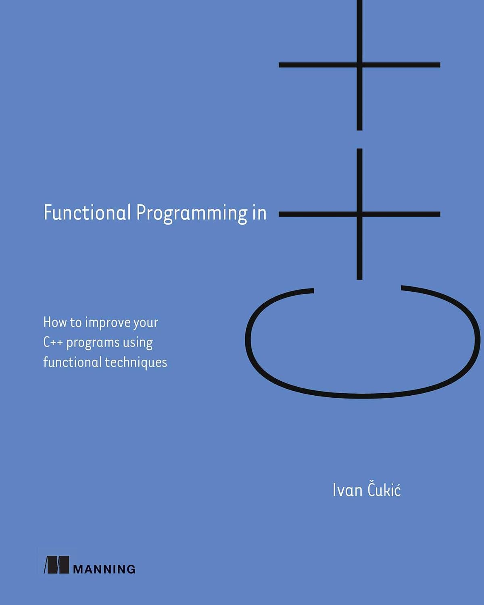
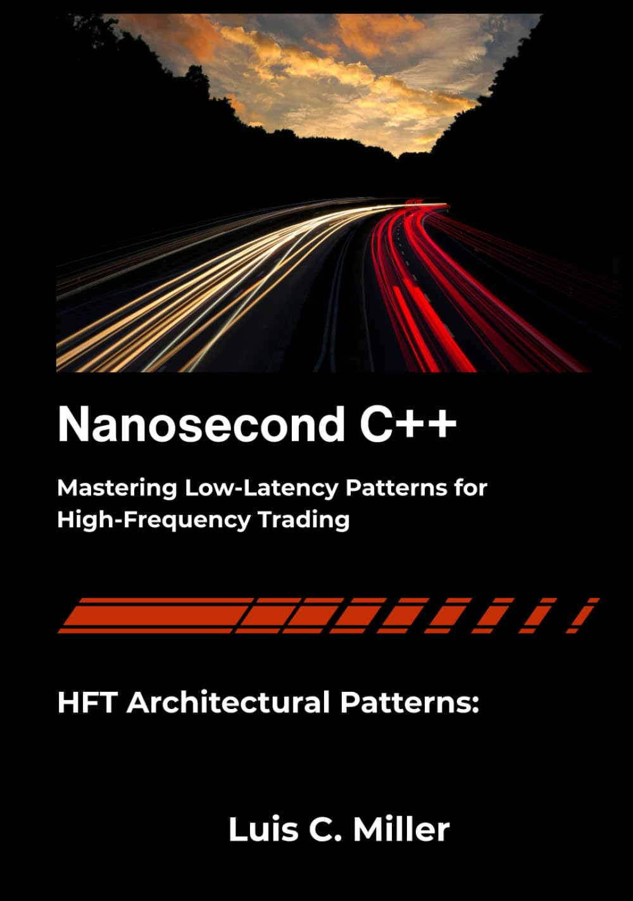
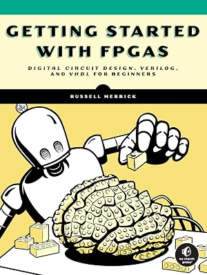

CSCI 3907: Seminar: Performance-Aware Programming
|
 |
 |
|
 |
General Information
Professor: Simon D. Levy
Textbook: There is no official textbook for this course. Exams and assignments will be based on course lectures. Books from which I have drawn in designing this course include:
-
Functional Programming in C++: How to improve your C++ programs using functional techniques
-
Nanosecond C++: Mastering Low-Latency Patterns for High-Frequency Trading
- Getting Started with FPGAs: Digital Circuit Design, Verilog, and VHDL for Beginners
Objectives
This course equips student to write programs for performance-critical environments like robotics and high-frequency trading, in which issues of memory access and execution speed are crucial. Topics include:
-
- writing nontrivial programs in a performant language like C++
- avoiding mutation, inheritance, and other tradtiional object-oriented techniques that can make programs unsafe and difficult to debug
- using powerful tools like gprof and PAPI to assess the performance of such programs.
- using Field-Programmable Gate Array (FPGA) hardware to implement performance-critical computations
Classroom work will consist of lecture and discussion. Written work will consist of several programming projects, two in-class hourly exams, and a comprehensive take-home final exam.
Grading
Because this course is a seminar, I expect you to show up for every lecture and participate. Participation -- measured as showing up and contributing to the discussion -- will count for 15% of your grade. Missing three or more meetings without a pre-arranged absence (sports commitment, job interview, etc.) or genuine emergency will result in a participation grade of zero.
The written work for the course (85% of your grade) will consist of
-
- Programming projects (45% of the grade)
- Two hourly exams (20% of the grade)
- A final exam(20% of the grade)
Programming assignments should be submitted to the private repository I have set up for you on github, using a separate folder for each assignment. Your repository name is https://github/com/simondlevy/<username>, where <username> is your W&L network user name (for example, jsmith26). Each assignment is due 11:59 PM on the date indicated in the schedule below. You will receive no credit for work submitted any other way (for example, by email, or in a repository created by you), and I will take off 10% per day for lateness. If you are unhappy with your grade on an assignment, you must get back to me within a week for a review. I will ignore any such requests sent after this brief period.
The grading scale for your course grade will be 93-100 A; 90-92 A-; 87-89 B+; 83-86 B; 80-82 B-; 77-79 C+; 73-76 C; 70-72 C-; 67-69 D+; 63-66 D; 60-62 D-; below 60
AI Policy
Each assignment will specify the degree to which you can use AI tools.
If I suspect that you submitted a copy/pasted an AI-generated solution on an exercise on which AI use was prohibited, I will ask you to explain to me in-person how your solution works. If you are unable to do this, you will receive a grade of zero on the entire assignment.
Accommodations
Washington and Lee University makes reasonable academic accommodations for qualified students with disabilities. All undergraduate accommodations must be approved through the Office of the Dean of the College. Students requesting accommodations for this course should present an official accommodation letter within the first two weeks of the (fall or winter) term and schedule a meeting outside of class time to discuss accommodations. It is the student’s responsibility to present this paperwork in a timely fashion and to follow up about accommodation arrangements. Accommodations for test-taking should be arranged with the professor at least a week before the date of the test or exam.
Final Exam Policy
The final exam for this course will be given during the final exam week. The exam will be distributed electronically for you to complete in no more than three hours. You can return the exam to me via github.
Academic Integrity
The hourly exams and the final exam should be written individually and pledged.
Although you may discuss programming problems among yourselves, your programs should be your own work, unless otherwise specified (as when you are told to do pair programming). You MAY use code from the PowerPoint slides or from the textbook for the course. Otherwise, you may NOT use the work of your classmates, former students, friends, or anyone else in writing your programs. By “use” I mean turning in the work of others as your own, or even casting your eyes upon the work of others with a view to incorporating their solutions into your own. Deliberate concealment of sources constitutes plagiarism and will result in a failing grade for the course and, if necessary, a report to the EC. Deliberately providing solutions to other students, either verbally or in writing, via hardcopy or electronic transmission, will also count as plagiarism and subject to the same penalties. In particular, you may not share your work until the deadline to hand in material has passed. Please familiarize yourself with W&L’s policy on plagiarism.
Tentative Schedule
| Monday | Wednesday | Friday | |
| 31 Aug Week 0 |
Course intro Toolchain setup |
||
| 7 Sep Week 1 |
From Java to C++
[W]e almost never use objects and never use inheritance Debugging with printf What about Rust? C++ always wins |
C++: memory management with new and delete
Detecting memory issues with Valgrind |
Avoiding explicit memory management: copy elision
Avoding mutability with const and constexpr Using compiler warnings for safety Simplifying declarations with auto |
| 14 Sep Week 2 |
Supporting different implementations via header files | Header-only style
Compiler macros: #define #pragma once |
Timing with the time command
Simple run-time profiling with gprof on Linux or sample on OS X Compilers Will Win: Speeding up execution with optimizaion flags Due: Assignment #1 |
| 21 Sep Week 3 |
Namespaces
The Standard Template Library |
Coding style | |
| 28 Sep Week 4 |
Review for exam | First in-class exam | |
| 5 Oct Week 5 |
Discuss exam | Stepping up our game: Mechanical Sympathy | Reading Day; No Class |
| 12 Oct Week 6 |
PAPI setup | ||
| 19 Oct Week 7 |
|||
| 26 Oct Week 8 |
Second in-class exam | ||
| 3 Nov Week 9 |
Discuss exam | FPGA: Intro
iCEBreaker setup |
FPGA: A peek under the hood (HDL and toolchains) |
| 10 Nov Week 10 |
|||
| 17 Nov Week 11 |
|||
| 30 Nov Week 12 |
Review for final exam
Glossary |